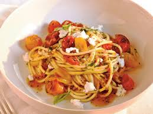
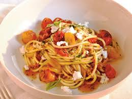

My favourite dish
Pasta with bacon and tomato sauce
I am in 1st div
I am in innermost div of 1st div
I am in 2nd div
I am in innermost div of 2nd div
I am in 3nd div
I am in innermost div of 3nd div
Pasta is a type of food typically made from an unleavened dough of wheat flour mixed with water or egg and formed into sheets or other shapes, then cooked by boiling or baking.
I love pasta because it is lightly dresses,not buried in heavey,over spiced,thick, its flavour and ingredients used in it,the taste that it forms its delicious.
Ingredients
- 1 red onion
- 2 red peppers
- 120g bacon
- 1 can(450g) tomatoes
- 1 cup water
- olive oil
- garlic
- oregano
- 50g pasta per person
Steps
These are steps :
- Cut the onion, red peppers and bacon into small pieces 😮
- Heat some olive oil in a pan and fry the onion, red peppers and bacon 💥
- Add oregano, garlic, tomatoes, and water and cook for 20 minutes 🤏
- Cook the pasta in a big pot og boiling water 🕳
- Serve the pasta in a big pot of boiling water 🙂
The dish should look like fresh made at that time its falvours should be seen. The smell of pasta is flour/eggy.

 
